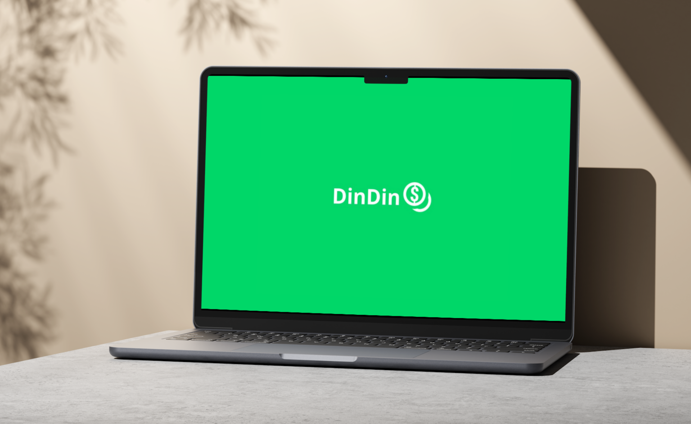

Bem-vindo ao nosso portal online, o coração pulsante do DinDin - o seu
parceiro confiável para o planejamento financeiro inteligente. Em
nosso site, você encontrará um universo de recursos projetados para
capacitar e transformar a sua relação com o dinheiro.
Explore uma interface intuitiva e amigável, projetada para
proporcionar a você uma experiência fluida e informativa. Navegue
pelas diversas seções dedicadas a ferramentas financeiras poderosas,
conselhos especializados e artigos informativos que o guiarão em
direção à liberdade financeira.
Agora é mais do que um aplicativo, é o seu parceiro definitivo para o
planejamento financeiro e a jornada em direção à liberdade financeira.
Com ele, você terá o poder de organizar suas finanças de forma
inteligente, proporcionando um controle preciso sobre cada aspecto do
seu dinheiro.
Controle seus gastos, visualize suas receitas e despesas de maneira
intuitiva e tenha uma visão completa do seu fluxo financeiro. Além
disso, com recursos avançados de análise, o DinDin o ajuda a
identificar oportunidades de crescimento e otimização.
Baixe agora!
Nossos Serviços
A Administração Financeira é projetado para levar sua estabilidade financeira a um novo patamar. Com um time de especialistas altamente qualificados, estamos prontos para ajuda-lo a otimizar seus recursos, através de pesquisas e analises, permitindo que você alcance seus objetivos financeiros com confiança e segurança.
A Calculadora Financeira é uma ferramenta poderosa que oferece controle preciso sobre seus lucros, despesas e gastos, tanto em base mensal quanto anual. Com ela, você pode tomar decisões informadas, identificar oportunidades de economia e planejar metas futuras. Simples de usar e acessível a todos, a calculadora é uma aliada essencial para o sucesso financeiro.
Atente-se aos Artigos Detalhados, que disponibilisamos gratuitamente, desvendamos conceitos financeiros, tornando-os compreensíveis para todos. Explore tópicos como planejamento de aposentadoria, gestão de dívidas e estratégias de investimento.
Para poder acessar nossos servições mais avançados, é necessário que
faça login! Mas caso não possua um login ainda,
crie uma conta.
Mais sobre
Você já imaginou ter um parceiro financeiro que esteja sempre ao seu
lado, oferecendo orientações personalizadas para ajudá-lo a alcançar
seus objetivos financeiros? Apresentamos o
DinDin, o seu novo aliado na jornada
para a independência financeira.
O DinDin é um aplicativo de planejamento financeiro inovador,
desenvolvido com o propósito de simplificar e otimizar a forma como você
gerencia suas finanças. Com uma interface intuitiva e funcionalidades
poderosas, ele oferece uma experiência sem igual para usuários de todos
os perfis.